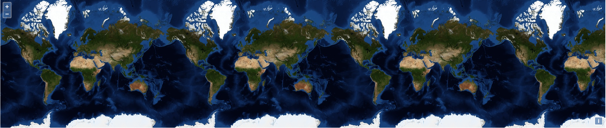

OpenLayers
Stand, Neues und Ausblick; oder
"15 Punkt-Releases später… was kommt als nächstes?"
Marc Jansen
FOSSGIS 2016, Salzburg, 05.07.2016
Gliederung
- Über…
- Stand
- Neues (15 Punkt-Releases)
- Ausblick
Über…
Marc Jansen


- Seit 2007 Entwickler / Projektleiter bei terrestris
- Kernentwickler und PSC Mitglied GeoExt
- Kernentwickler OpenLayers
- Buchautor "OpenLayers"
- Sprecher & Trainer
national & international - OSGeo Foundation Charter Member
terrestris
- terrestris.de
- OpenSource GIS aus Bonn
- Entwicklung, Projekte & Support/Schulung
- Beratung, Planung, Implementierung & Wartung
Stand
Was ist OpenLayers?
A high-performance, feature-packed library for all your mapping needs.
- OpenSource (BSD)
- JavaScript
- OSGeo project
OpenLayers
- …lange Historie
- v2.0.0, August 2006
- v3.0.0, August 2014
- v3.16.0, Mai 2016
- viele Daten- & Layerquellen
- Interaktionen & Steuerelemente
- Aktiv entwickelt & große Community
- Gut dokumentiert & viele Beispiele
- Universal einsetzbar
Neues
15 Punkt-Releases später
11.03.2015 - 05.07.2016
v3.3.0 - v3.17.0
14 Punkt-Releases
- > 3.000 commits
- > 1.000 Dateiänderungen
- 22 Beitragende (code)
- Top-6 Beitragende
- 5 verschiedene Firmen & ein Bot
- 5 verschiedene Nationalitäten
- Hohe Kontinuität
Wichtige Änderungen / neue Features
… eine Auswahl
v3.4.0
- Dateline wrapping tile-sources 
- Circles in Draw interaction
v3.4.0 — v3.10.0
- Einige experimentelle Features entfernt (two-way-binding, FeatureOverlay…)
- Spezifische Vektor sources entfernt; =>
formatin Vector-source - Translate Interaktion
- IE 9 mit ES5-Shims, Edge-Support
- Zahlreiche Bugfixes
- Performanceverbesserungen
- Bessere Dokumentation
- …
v3.11.0
- Clientseitige Rasterreprojektion
Sydney, Australien, Oktober 2009
v3.11.0
- Mapbox Vector Tiles
Außerdem neu:
- ol.source.CartoDB
- ol.source.ImageArcGISRest
- Multiline Labels (Vektoren)
- ol.source.Raster
Weiche Übergänge bei URL-Änderungen
…gerne Vergessen
- …zahlreiche Usability- und Dokumentationsverbesserungen
- Kreuzverlinkung
- Verlinkung API
- Kennzeichnung älterer Beispiele / API
| v3.3.0 | v3.16.0 |
|---|---|
Ausblick
… was kommt als nächstes?
Zukunftsmusik
- Abhängigkeit von closure-library entfernen
- ECMAScript 2015 Module
- Mehr WebGL (Linien und Flächen), #5462
- …
Vielen Dank
Fragen & Anmerkungen?
Impressum
Autor
Marc Jansen
terrestris GmbH & Co. KG
Kölnstr. 99
53111 Bonn
jansen@terrestris.de
terrestris GmbH & Co. KG
Kölnstr. 99
53111 Bonn
jansen@terrestris.de
Lizenz
Diese Folien sind unter CC BY-SA veröffentlicht.